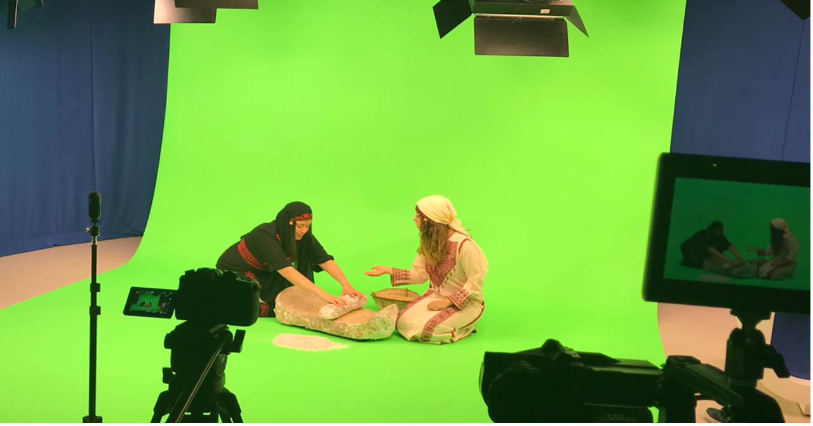
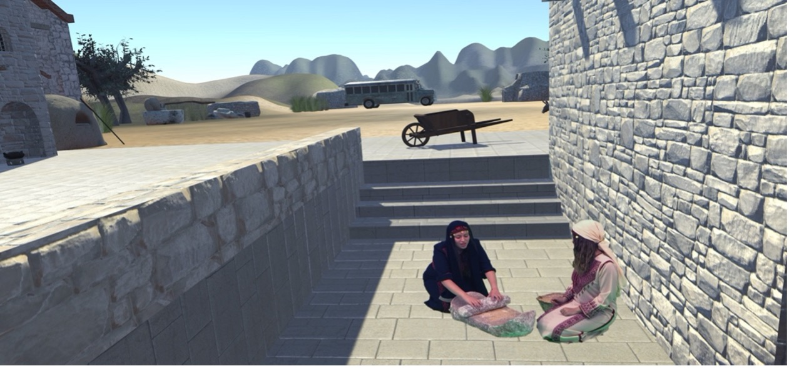
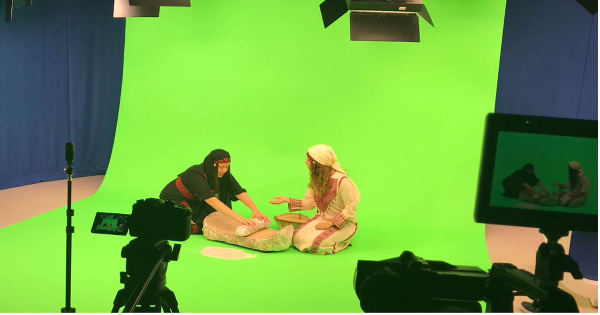
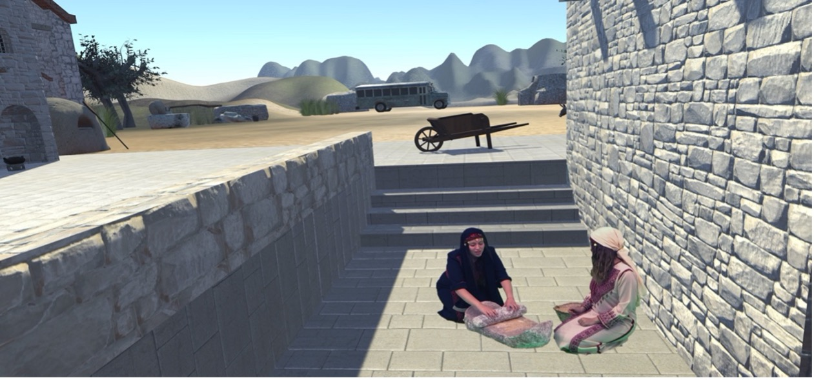

Cultural Expression In Media
Some Theory
But only some, I promise
“Serious” Media


Anti-Colonial theory and discourse

Contradiction of Cultures
[The] contradictions between the indigenous culture of the colonized and occupied, which encourages and fosters resistance, and that of the imperialist culture, which, among other things, criminalizes anti-colonial and anti-imperialist struggles and resistance and transforms the latter into terrorism, is best exemplified by the Palestinian case (Abdo, 2014, p. 84).
Tangible Culture


Intangible Culture

Key Concept 1: Serious Games for Culture, History, and Heritage
Cultural Awareness

Call to Prayer
Normalizing Prayer
Post Script

Historical Reconsturction
  
 
Heritage Awareness


Importance
[Before] Palestinians can live in a free Palestine, they have to create a free Palestine in their imagination through stories, films, novels, and the arts (Alareer & Abulhawa, 2024, p. xviii)
Key Concept 2: Context of Use
Static Set-up

Augmented Visit

Stand alone

Engagement


Exercise
Pick a cultural element you’d like to see expressed from your own culture. Then using one of the set-up types (static, augmented visit, or standalone), create a game concept.
- What would be its learning goal (cognitive, psychomotor, affective)?
- What genre would this game be?
- What interaction paradigm would it have?
- What environment will learner be in, and how will that environment contribute to your learning objective?